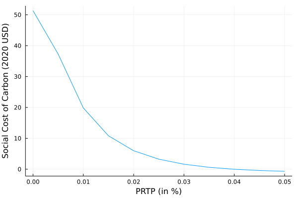

Climate Uncertainty
- Climate costs valuation is associated with various sources of parameters uncertainties and scenarios:
- scenarios of population projection
- scenarios of technology
- scenarios of economics dynamics
- atmospheric chemistry
- climate dynamics
- impacts
Parameters Uncertainty
Let's illustrate this uncertainty by conducting a Monte Carlo simulation on the climate sensitivity parameter:
using Mimi
using MimiFUND
using Plots
using Statistics
using Distributions
# get the model
m = MimiFUND.get_model()
run(m)
explore(m)
sd = @defsim begin
# Define random variables
climatedynamics.climatesensitivity = truncated(Normal(2, 1), 0.1, 5) # truncated to be stricly positive
save(climatedynamics.temp)
end
# Run 100 trials
si = run(sd, m, 100)
test = getdataframe(si, :climatedynamics, :temp)
test = filter("time" => ==(2100), test)
histogram(test[:,:temp], label = nothing, xlabel = "Temperature Increase", ylabel = "Nber of trials")Discount Rates
Another possible source of uncertainty is the chosen discount rate.
using Mimi
using MimiFUND
using Plots
using Statistics
using Distributions
# get the model
m = MimiFUND.get_model()
update_param!(m, :climatedynamics, :climatesensitivity, 4.5)
discounting = [i for i in 0:0.005:0.05]
results_sc = []
for i in eachindex(discounting)
push!(results_sc, MimiFUND.compute_scc(m, year = 2020, eta = 1., prtp = discounting[i]) * 1.68)
end
plot(discounting, results_sc, label = nothing, xlabel = "PRTP (in %)", ylabel = "Social Cost of Carbon (2020 USD)")